Project 1
Image of the Russian Empire -- Colorizing the Prokudin-Gorskii Photo Collection
Wenhao Ruan · Fall 2026
Introduction
Sergei Mikhailovich Prokudin-Gorskii (1863-1944) was a man well ahead of his time. Convinced, as early as 1907, that color photography was the wave of the future, he won Tzar's special permission to travel across the vast Russian Empire and take color photographs of everything he saw including the only color portrait of Leo Tolstoy. And he really photographed everything: people, buildings, landscapes, railroads, bridges... thousands of color pictures! His idea was simple: record three exposures of every scene onto a glass plate using a red, a green, and a blue filter. Never mind that there was no way to print color photographs until much later -- he envisioned special projectors to be installed in "multimedia" classrooms all across Russia where the children would be able to learn about their vast country. Alas, his plans never materialized: he left Russia in 1918, right after the revolution, never to return again. Luckily, his RGB glass plate negatives, capturing the last years of the Russian Empire, survived and were purchased in 1948 by the Library of Congress. The LoC has recently digitized the negatives and made them available on-line.
Images Alignment
Toke the Cathedral as an example, the original image consist of three separate images taken with different color filters. These three images are shown below (refer to Figure 1a, 1b, and 1c).
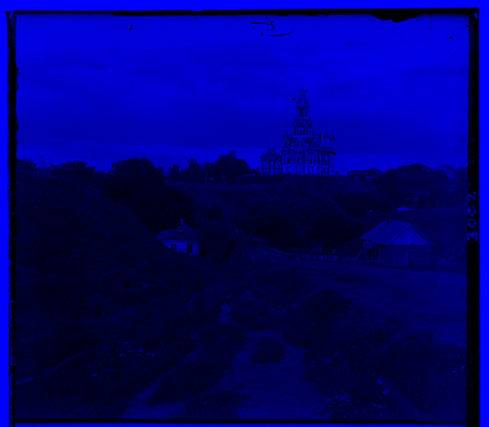
Figure 1a: Blue Channel
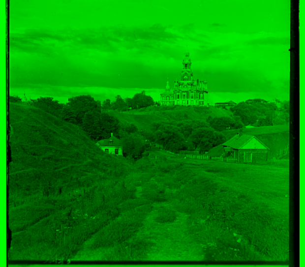
Figure 1b: Green Channel
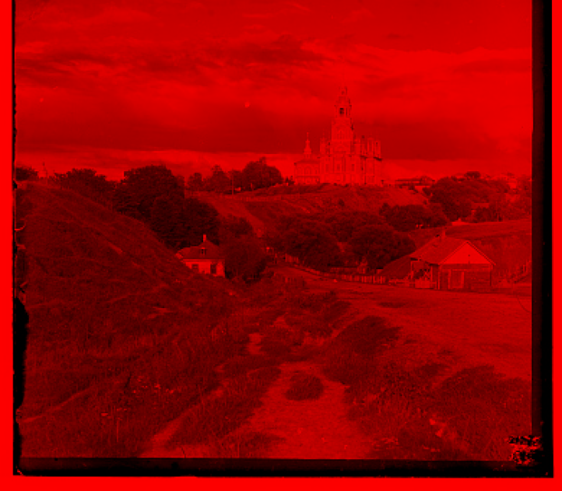
Figure 1c: Red Channel
The easiest way to reconstruct the color image is to use the blue channel of the image as the reference and align the red and green channels to it. However, if we simply stack them together,the three channels are not perfectly aligned. This produces visible color disaligement in the final image, as shown in Figure 2.

Figure 2: Cathedral Simple Alignment
Based on this, we have to find some ways to align the three channels and eliminate the misalignment. The easist way is to exhaustively search over a window of possible displacements, score each one using some image matching scores such as L2 Norm or Normalized Cross Correlation (NCC). The equations of both scores are listed below:
L2 Norm
\[ L2(I_1, I_2) = \sqrt{\sum_{x,y} \left(I_1(x,y) - I_2(x,y)\right)^2} \]
Normalized Cross-Correlation (NCC)
\[ \mathrm{NCC}(I_1,I_2)=\frac { \sum_{x,y}\left(I_1(x,y)-\bar{I}_1\right)\left(I_2(x,y)-\bar{I}_2\right)} { \sqrt{\sum_{x,y}\left(I_1(x,y)-\bar{I}_1\right)^2}\sqrt{\sum_{x,y}\left(I_2(x,y)-\bar{I}_2\right)^2}} \]
After applying the alignment algorithm, we can get the final aligned image using NCC as shown in Figure 3.
Gaussian Pyramid Acceleration
The above alignment algorithm is very slow since it needs to exhaustively search over a window of possible displacements. And the cost grows with both the window size and the image size. To accelerate the process, we can use Gaussian image pyramid to align the images from coarse to fine. Each level of the pyramid is produced from the previous one in two steps, a Gaussian blur to remove high-frequency details and followed by downsampling by a factor of 2. Alignment starts at teh coarsest level, where the image is small so that ±15 pixel exhasustive search is cheap. The resulting offset is then passed down to the next level, multiplied by 2, and refined within a ±2 pixel window. Repeating this for 3-4 steps could lead to the final offsets. Figure 4 shows the results of all the provided images. It is noted that Emir (Figure 4e) was aligned with a 3-level pyramid, while other images used 4 levels.
Gallary
Figure 4a: Cathedral
G offset: (2, 5) | R offset: (3, 12) | Time: 0.08s
Figure 4b: Monastery
G offset: (2, -3) | R offset: (2, 3) | Time: 0.08s
Figure 4c: Tobolsk
G offset: (3, 3) | R offset: (3, 6) | Time: 0.08s
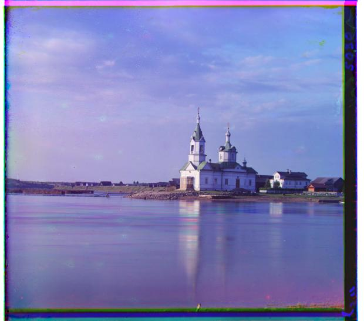
Figure 4d: Church
G offset: (4, 25) | R offset: (-4, 58) | Time: 4.11s
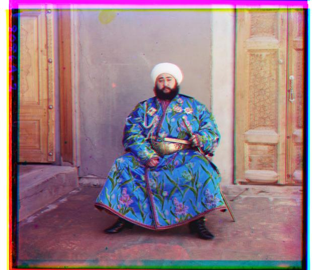
Figure 4e: Emir
G offset: (24, 49) | R offset: (-205, 141) | Time: 4.58s
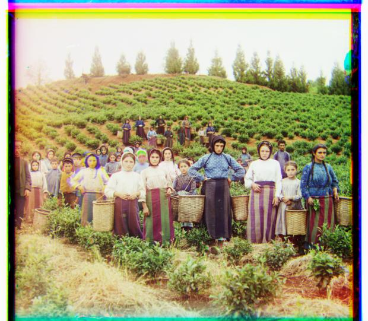
Figure 4f: Harvesters
G offset: (17, 60) | R offset: (13, 124) | Time: 4.04s
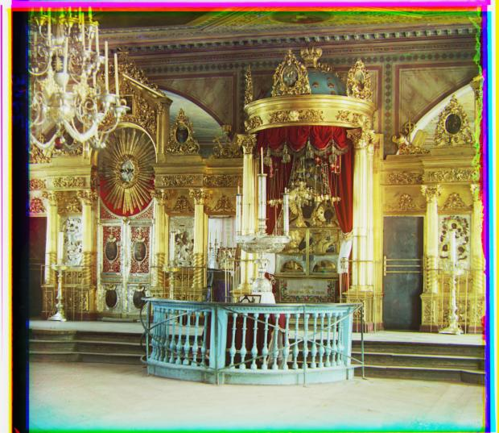
Figure 4g: Icon
G offset: (17, 41) | R offset: (23, 89) | Time: 4.18s
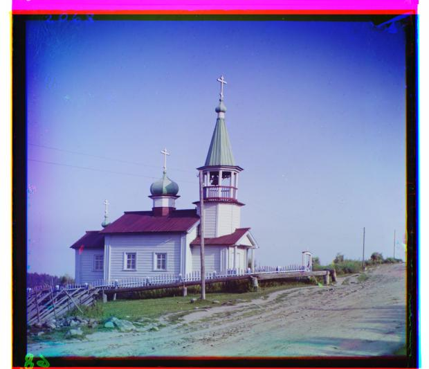
Figure 4h: Ilemselga
G offset: (7, 40) | R offset: (11, 130) | Time: 4.33s
Figure 4i: Melons
G offset: (11, 82) | R offset: (13, 178) | Time: 4.22s
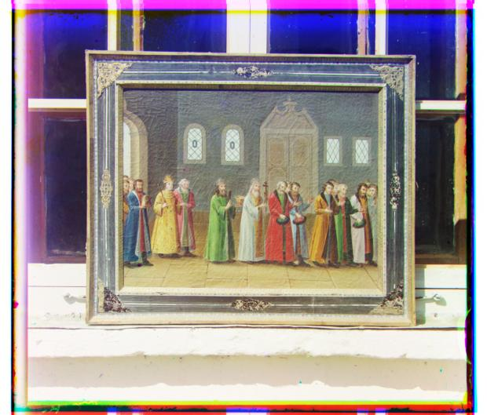
Figure 4j: Religious Painting
G offset: (3, 28) | R offset: (7, 68) | Time: 4.14s
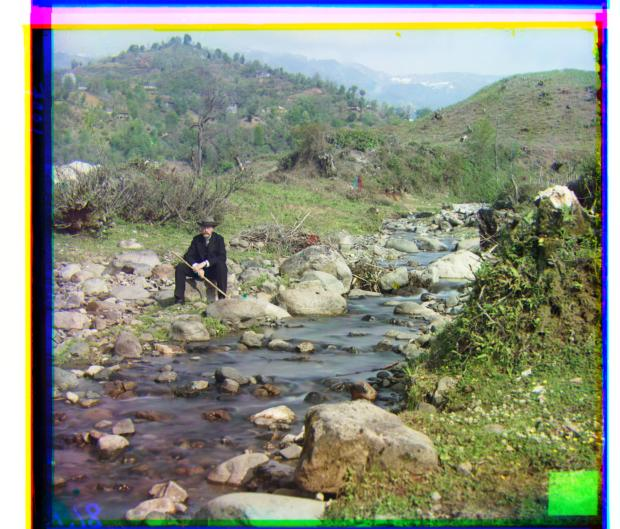
Figure 4k: Self Portrait
G offset: (29, 79) | R offset: (37, 176) | Time: 4.25s
Figure 4l: Siren
G offset: (-6, 49) | R offset: (-25, 96) | Time: 4.34s
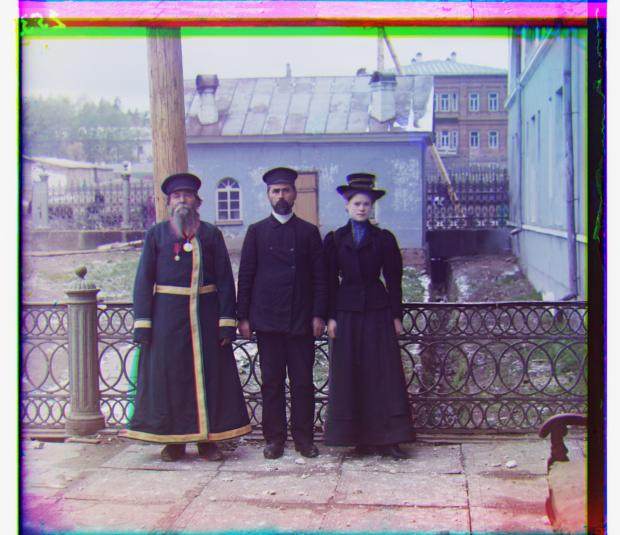
Figure 4m: Three Generations
G offset: (14, 53) | R offset: (11, 112) | Time: 4.24s
Figure 4n: Wharf
G offset: (-7, 15) | R offset: (-16, 83) | Time: 4.28s